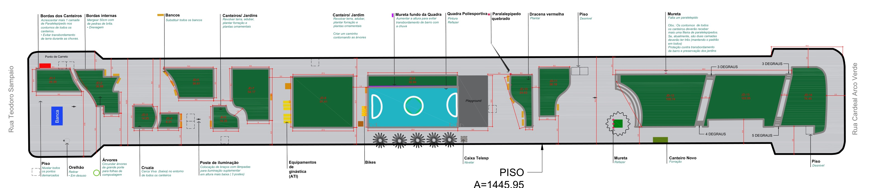
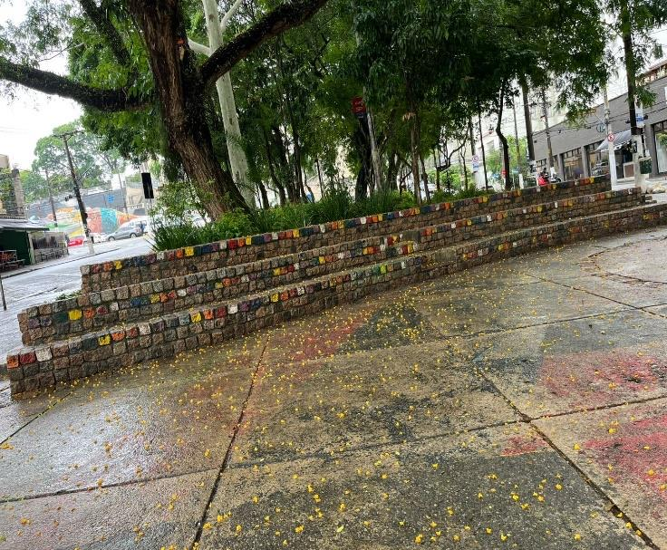
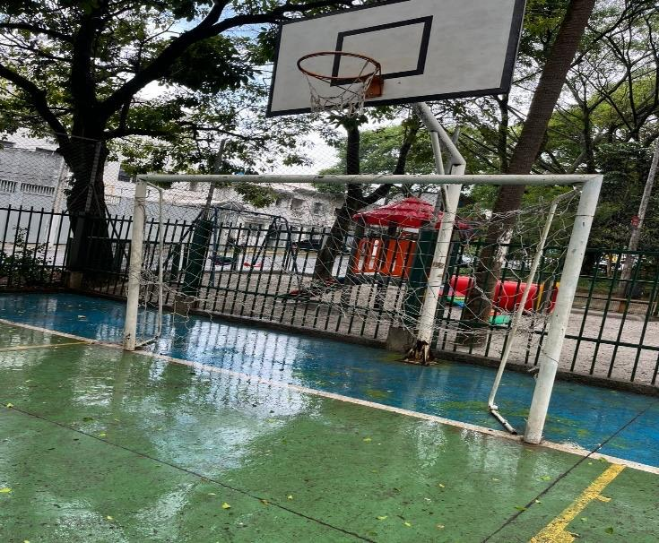
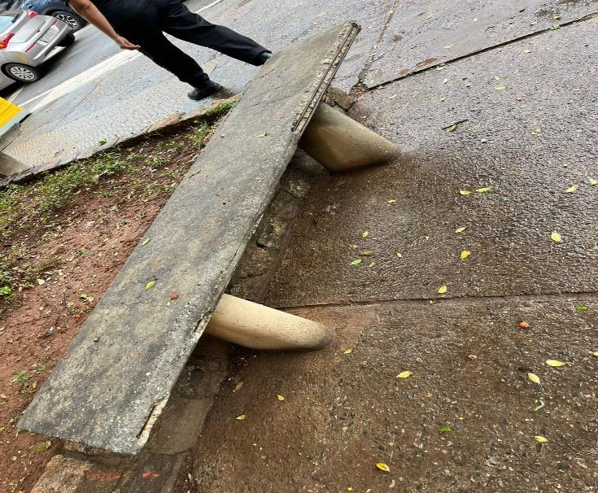
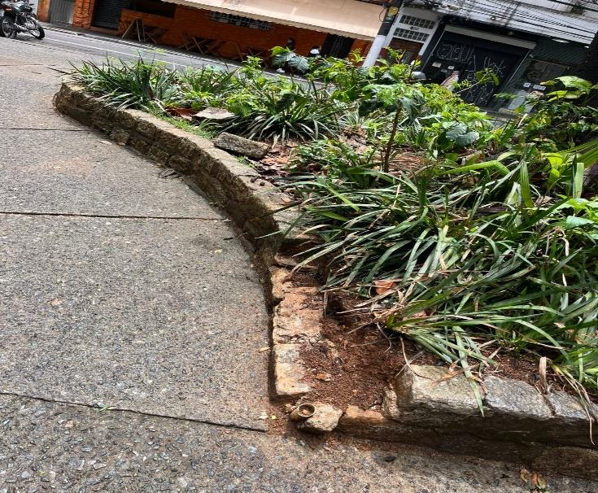
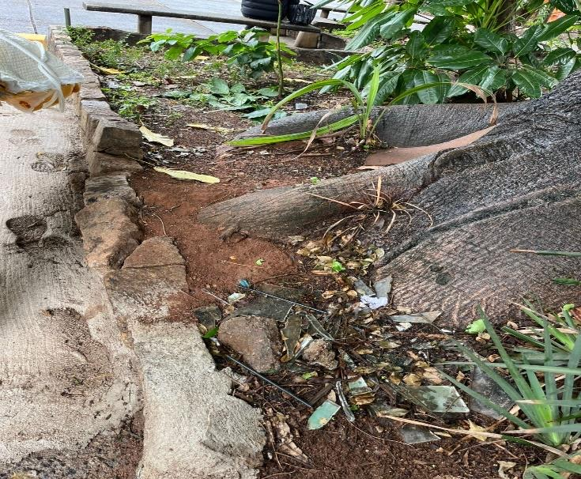
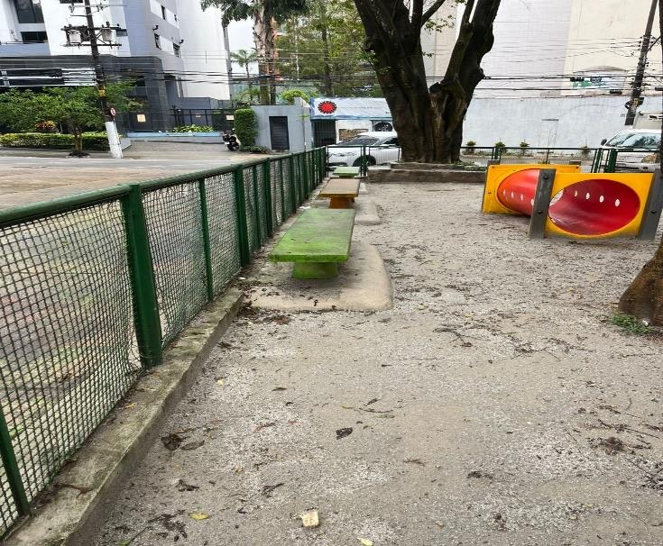
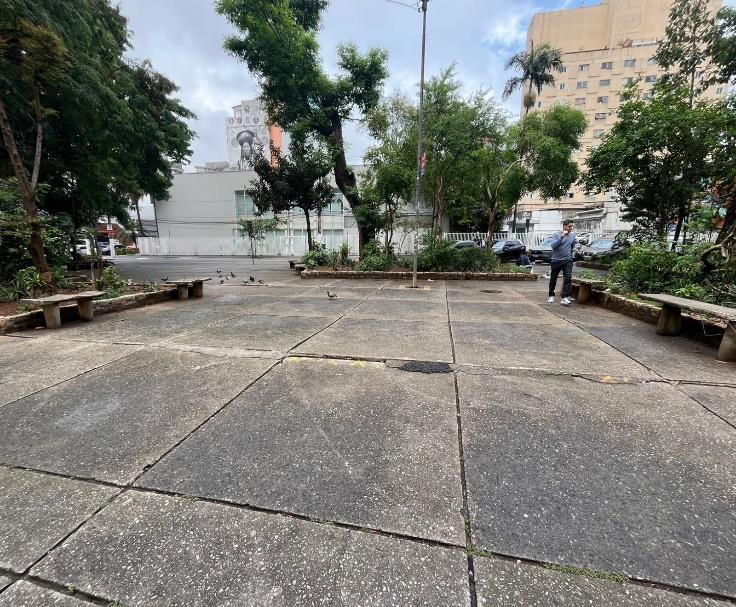
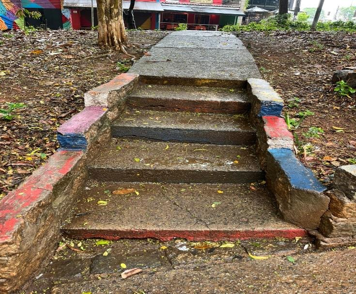

Calçadas e passeios
Cerca de 270 m³ de concreto antigo são quebrados à mão e trocados por passeio novo de concreto armado com acabamento “bambolê”. Também estão previstas a limpeza das juntas de dilatação (1.350 m) e escadas refeitas.
A Subprefeitura de Pinheiros contratou a reforma completa da praça: piso novo, canteiros refeitos, quadra, bancos, drenagem e plantas.
Aqui estão todos os documentos públicos da obra, explicados em linguagem simples: quanto custa, quem faz e quando termina.
01 · A obra
O objeto oficial é a “execução de obras de revitalização em área pública, com manutenção de equipamentos e correção de acessibilidade”. Na prática, a praça inteira, da Rua Teodoro Sampaio à Rua Cardeal Arcoverde, recebe piso novo, canteiros refeitos e uma quadra reformada.

Cerca de 270 m³ de concreto antigo são quebrados à mão e trocados por passeio novo de concreto armado com acabamento “bambolê”. Também estão previstas a limpeza das juntas de dilatação (1.350 m) e escadas refeitas.
Os paralelepípedos das bordas são arrancados, reassentados e rejuntados, e entram 206 m² de pedras novas. O objetivo é acabar com os desníveis em volta dos 14 canteiros.
A quadra de 23,5 × 12 m recebe piso de concreto novo e pintura, com demarcação de vôlei, futsal, basquete e handebol, além de traves, postes, rede e portão novo.
São 384 m² de grama esmeralda, terra preparada e mudas de 13 espécies (dracena, primavera, hibisco, filodendro, tumbérgia e outras), mais 44 m de bancos de concreto padrão Prefeitura.
Tubos de ferro fundido e PVC e grelhas de ferro para escoar a água que hoje empoça no piso.
Piso podotátil nos pontos de travessia. O memorial também cita corrimão, mas ele não aparece na planilha de preços (ver pontos de atenção).
Em 15 de outubro de 2025 a Supervisão Técnica de Projetos e Obras fotografou a praça inteira. O relatório de vistoria tem 148 fotos. Estas são algumas delas:








A prancha do projeto traz a proposta apresentada ao Orçamento Participativo 2026 e ao Conselho Participativo Municipal. Ela é dividida em uma fase estrutural e uma fase de paisagismo. Comparando ponto a ponto com a planilha de preços:
| Pedido na proposta | Está na planilha? |
|---|---|
| Nivelar o calçamento | Sim demolição e passeio novo |
| Mais uma fileira de paralelepípedos em volta dos canteiros | Sim recuperação de orlas |
| Trocar bancos | Sim 44 m de banco de concreto |
| Trocar lixeiras | Não encontrado |
| Braços duplos de iluminação em 3 postes | Não encontrado O único item de “iluminação” é a sinalização do canteiro de obras. |
| Retirar o orelhão desativado | Não encontrado |
| Aumentar a mureta do fundo da quadra | Não encontrado |
| Reformar a quadra | Sim piso, pintura, traves e portão |
| Revolver a terra, adubar, forração e mudas | Em parte Há terra preparada, grama e 13 espécies. Cruzia, lírios e pedrisco não aparecem. |
Itens “não encontrados” podem estar previstos em outro contrato ou ser feitos por outra equipe da Prefeitura. Os documentos deste processo não dizem nada sobre isso.
02 · O dinheiro
Cada pedra do muro abaixo vale R$ 10 mil do contrato. Toque ou passe o mouse numa categoria para ver quanto ela custa.
| Categoria | Contrato (Progredior) | Orçamento da Prefeitura | % do total |
|---|---|---|---|
| Total | R$ 1.439.886,76 | R$ 1.502.407,93 | 100% |
Fontes: proposta de preço da Progredior e planilha orçamentária da Subprefeitura (junho/2026, tabelas EDIF/INFRA de janeiro/2026, sem desoneração). Os valores já incluem o BDI.
Custo direto do orçamento de referência, sem BDI.
A Progredior ganhou com um preço 4,16% abaixo do orçamento da Prefeitura, ou R$ 62.521,17 a menos. Na proposta, o custo direto de cada serviço é idêntico ao da Prefeitura. Toda a diferença está no BDI, que caiu de 20,11% para 15,11% nas obras e de 33,20% para 28,20% no projeto.
Os pagamentos são feitos por medição mensal do que foi executado. O cronograma da proposta prevê:
A nota de empenho 91609/2026 reserva o dinheiro em três parcelas em 2026: outubro R$ 411.188,24, novembro R$ 496.199,52 e dezembro R$ 532.499,00. Essa última soma os meses 3 e 4 do cronograma.
Da dotação 51.10.15.451.4020.1170.4.4.90.51.00.00.1.500.9551.0, chamada “Intervenção, Urbanização e Melhoria de Bairros – Plano de Obras das Subprefeituras”, com fonte “Recursos destinados ao Orçamento Cidadão – SUB PI”. Duas notas registram o valor:
A informação da coordenadoria administrativa diz que a obra foi “indicação do Conselho Participativo Municipal”. O Estudo Técnico Preliminar e o Termo de Referência falam em “emenda parlamentar”. Veja os pontos de atenção.
03 · A licitação
A Concorrência Presencial nº 90002/SUB-PI/2026 usou o critério de menor preço global e disputa aberta, com lances ao vivo. A Subprefeitura inverteu as fases: primeiro conferiu os documentos técnicos de todas as empresas e só depois abriu os preços. Os envelopes foram entregues até 11/08/2026 na sede da Subprefeitura.
Quatro empresas foram habilitadas. Depois da primeira rodada de lances, os preços ficaram assim:
A Progredior manteve a proposta inicial. A Stein e a Dekton deram lances, mas não chegaram abaixo dela. A DPT não mandou representante à sessão. Na segunda rodada ninguém deu lance, e não houve recursos. Detalhe: a proposta inicial da Dekton era exatamente o valor do orçamento da Prefeitura, R$ 1.502.407,93. Fonte: ata da 3ª sessão.
04 · Sessões públicas
As sessões da licitação foram abertas ao público e gravadas. Os links estão nos próprios documentos do processo.
A 2ª sessão, em 18/08/2026, divulgou o resultado da análise técnica. Não há link de vídeo dela nos documentos, só a ata.
05 · Linha do tempo
06 · Quem é quem
Nomes e cargos como aparecem nas assinaturas dos documentos. Para falar sobre a obra, o canal oficial é a Subprefeitura de Pinheiros: Av. Professor Frederico Hermann Júnior, 595, Alto de Pinheiros, ou o telefone 156.
07 · Pontos de atenção
Lendo os documentos lado a lado, aparecem informações que não batem entre si. Muitas parecem restos de modelos reaproveitados de outros processos. Estão listadas aqui para quem quiser perguntar à Subprefeitura, não como acusação.
08 · Biblioteca
São 67 arquivos, em ordem cronológica. Os documentos com código SEI podem ser autenticados no Portal de Processos com o código verificador e o código CRC indicados. As publicações também estão na busca do Diário Oficial: pesquise “Praça Benedito Calixto”.
09 · Conferir online
O Portal de Processos pede um captcha. Se o link abrir a tela de busca vazia, digite o número do processo (por exemplo 6050.2026/0010848-0) e os caracteres da imagem.